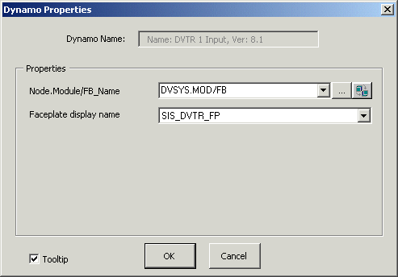

DVTR dynamo
The SIS dynamo sets contain four dynamos for the LSDVTR function block. The common voting arrangements (1oo2, 2oo3, 1oo1, 2oo2, and 1oo3) call for an DVTR block with one, two, or three input parameters. For these common cases, choose a dynamo based on the following:
DVTR_1Input_ for a 1oo1 voter
DVTR_2Input_ for a 1oo2 or 2oo2 voter
DVTR_3Input_ for a 1oo3 or 2oo3 voter
The one- and two-input DVTR dynamos are similar but have one or two fewer rows than the three-input dynamo. When any of these dynamos is initially dropped on a picture, the Dynamo Properties dialog prompts the user to enter the path to the function block. Users who prefer a custom faceplate can enter the name of the faceplate on the Faceplate display name box. The Dynamo Properties dialog is shown below:

The DVTR_3Input_ dynamo is shown below as it appears in Configure mode. (The descriptions, however, are for the behavior in Run mode.) The descriptions of the elements of the DVTR_2Input and DVTR_1Input_ dynamos are the same.
The following is the DVTR_3Input_ dynamo from the frsSIS_Theme dynamo set.
The DVTR input dynamos from the frsSIS dynamo set are the same as the _Theme versions except the DVTR_ALERTS indicator is replaced by a faceplate button:

For voting arrangements with more than three inputs, one DVTR_3Input_ dynamo is used, plus a DVTR_InputX dynamo for each additional input needed. The DVTR_InputX dynamo is shown below:

Thus, for a 6oo8 voter, you would drag-and-drop one DVTR_3Input_ dynamo and then drag-and-drop the DVTR_InputX dynamo five times, positioning each beneath the existing input lines.